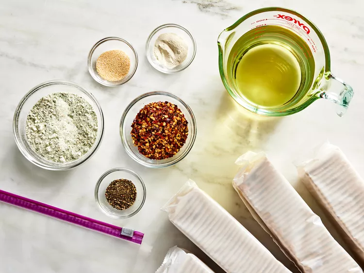
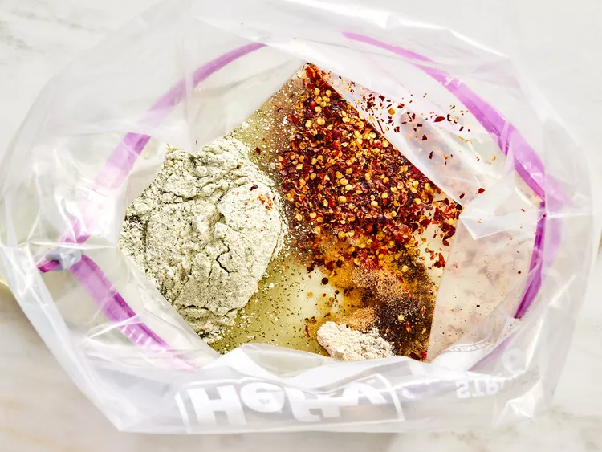
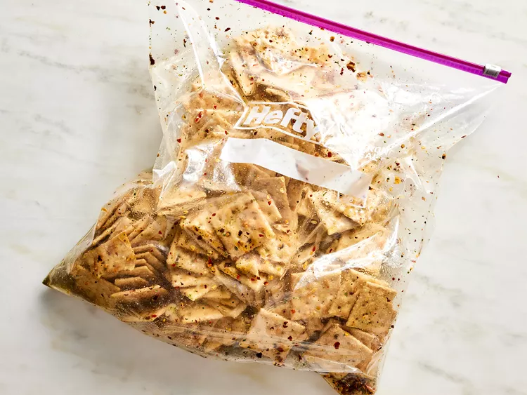
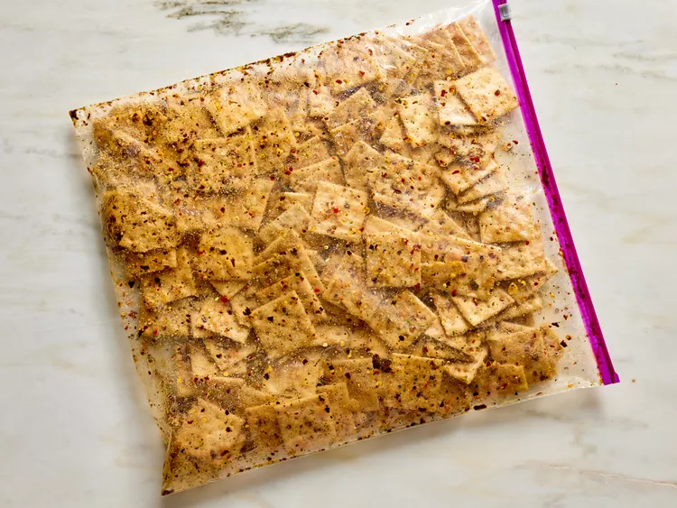
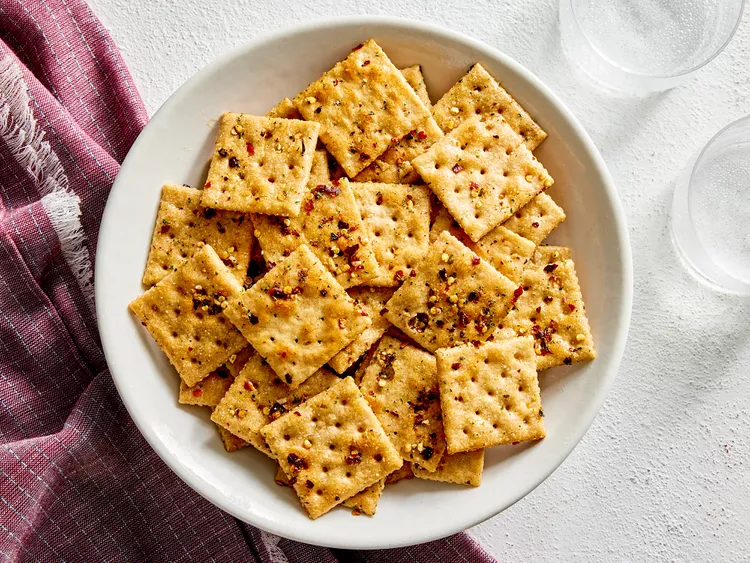

"Fire crackers are a cheap and deliciously spicy party snack that requires no cooking. These are really great with chili." __I phill hungry
Gather all ingredients
Place vegetable oil, ranch dressing mix, crushed red pepper flakes, garlic powder, onion powder, and black pepper in a 2-gallon resealable plastic bag.
Seal the bag and squeeze with your hands until oil and spices are well combined.

Place crackers into the bag, seal, and turn the bag over to coat crackers with spice mix.
Let sit for about 1 hour, then turn again. Repeat several times until crackers are well-coated with spice mix, then allow the bag to sit 8 hours to overnight.
Remove crackers and serve.
